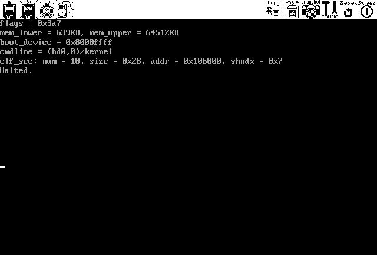

|
...making Linux just a little more fun! |
By Patrick Mahoney |
Several articles related to this topic appeared in the last few issues of the Linux Gazette. I plan to approach it in a much less programming oriented manner, only presenting to the reader the tools and tips he will need to begin the development of his own OS. Once done with this article, the interested reader should be all set to start browsing the resources available to him and start designing and coding.
You might not be aware of it, but operating system development doesn't start at the beginning. (!!) Writing a solid bootloader is a whole project in itself, and I would not advise one to begin an OS development project by writing a bootloader. Many reliable ones are available for free (Grub, lilo, ppcboot, etc...). If you plan on writing your own, I suggest you delay this task to a later stage of the project. In this article, I will be using GNU Grub, the Grand Unified Bootloader.
This article will present one of many possible environments which meets these requirements. It will consist of a development machine and a testbed machine that both lie on a common network.
A tool I found more useful than I initially thought it would be is an emulator. Such a tool will help debug your kernel and will allow you to rapidly test your newly added line of code. Don't be fooled, though. An emulator never replaces a good ol' testbed machine.
Next, you need a TFTP server. This tool will allow your testbed machine's tftp enabled bootloader to acquire a kernel from the development machine via the network connection.
Bochs version 1.4.1 is the chosen x86 emulator. Special care should be taken to compile it with debugger mode enabled. These commands should do the job:
$ ./configure --enable-x86-debugger $ makeIn order to properly use Bochs, you need to create a disk image. This image needs to have both a bootloader and a filesystem. This can be done using the mkbimage script. If you're too lazy to do it yourself, grab this gzipped 10MB disk image and add
diskc: file=c.img, cyl=24, heads=16, spt=63to your .bochrc file.
As for the TFTP server, I chose to use atftpd. It's an easy to use linux-based TFTP server implementation.
$ ./configure --enable-ne --enable-ne-scan=0x220 $ makeNote that a PnP PCI card would be easier to configure. Now, you can either install the Grub images on the testbed machine's MBR or on a floppy which your testbed machine will boot from. I prefer the latter, since my testbed machine is also used for other purposes, and therefore, I'd rather not play with its HD.
$ cat ./stage1/stage1 ./stage2/stage2 > /dev/fd0Now just insert your floppy in your testbed machine to see if your network card gets recognized. You can either configure it by hand or use a dhcp server, if any.
grub> dhcp Probing... [NE*000] NE2000 base 0x220, addr 00:C0:A8:4E:5A:76 Address: 192.168.22.14 Netmask: 255.255.255.0 Server: 192.168.22.1 Gateway: 192.168.22.1Note that you won't have to configure these parameters by hand each time you boot. See the GNU Grub documentation and the 'grub-install' script for details.
That's it! You're all set to test your setup!
The kernel is built from three source files: boot.S, kernel.c and multiboot.h. You can build the kernel by doing:
$ gcc -I. -c ./boot.S $ gcc -I. -c ./kernel.c $ ld ./kernel.o ./boot.o -o kernel -Ttext 100000Here's a quick and incomplete explanation. Multiboot is a standard that defines a way for the bootloader to pass information to the kernel it tries to load. boot.S accepts this information, sets up a stack, and calls 'cmain'. This function sets up the vga display, reads the information passed to him, prints some stuff and leaves. Then, boot.S gets the control back, prints the string 'Halted.', and enters an infinite loop. Pretty simple stuff, right? The reader is invited to dig into the code to get more details.
# /sbin/losetup -o 32256 /dev/loop1 ./c.img # /bin/mount -t ext2 /dev/loop1 /mnt/osdev/ # cpOf course, that can be automated by your Makefile. Once in Grub, simply do:/docs/kernel /mnt/osdev # umount /mnt/osdev/ # /sbin/losetup /dev/loop1 -d $ bochs
grub> kernel (hd0,0)/kernel grub> boot
(Click the image for the full size.)
# /usr/sbin/atftpd --daemon /home/bono/src/grub-0.92/docsFire off your testbed machine. Configure your network connection as shown above. Next, specify your devel machine's ip address as the TFTP server address and the location of the kernel image. Note that this option can be set by the dhcp server. Finally, start the boot process.
(...) grub> tftpserver 192.168.22.36 Address: 192.168.22.14 Netmask: 255.255.255.0 Server: 192.168.22.36 Gateway: 192.168.22.1 grub> kernel (nd)/kernel [Multiboot-elf, <0x100000:0x807:0x0>, <0x101808:0x0:0x4018>, shtab=0x106190, entry=0x100568] grub> bootA screen similar to that of Bochs should appear on your testbed machine's display.
If your debugging needs come to outgrow both the emulator and your kernel's printk's, one setup you could add to your OS is a serial debugger. This can range from some bytes thrown on the serial port, to a gdb-compatible remote-debugging extension. This information could be retrieved and processed by your development machine through a null-modem serial cable. It's a handy common practice in OS development.